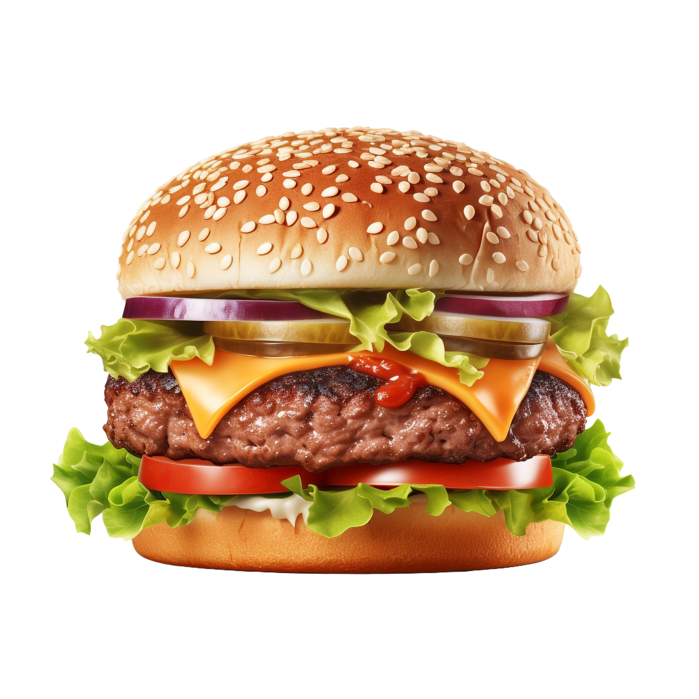

Burger King Whopper

Preparation Time:
15 mins
Cook Time:
15 mins
Total Time:
30 mins
Ingredients:
Ground beef
Burger buns
Lettuce
Tomato slices
Onion slices
Cheese slices
Mayonnaise
Ketchup
Mustard
Directions:
Divide ground beef into patties and season with salt and pepper.
Grill the patties until cooked to your desired level.
Toast the burger buns on the grill or in a toaster.
Assemble the burgers with lettuce, tomato, onion, cheese, mayonnaise, ketchup, and mustard.
Enjoy your Burger King Whopper!